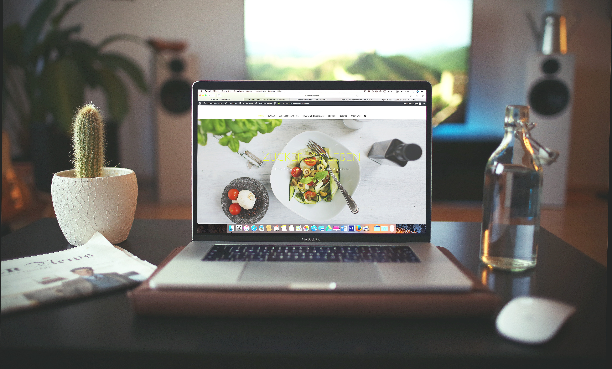

Elizabeth
Resturant Scout
Elizabeth is our restaurant scout extrodinarie. You'll be hard pushed to find someone more versed on London's most delicious and healthy food spots!.

Sian
Master Chef
Sian is the master of our kitchens, she can whip up a nutritious meal with even the most basic ingrediants. Dinner at hers is always a treat.

Billie
Health Coach
Billie is our resident Health Coach. She trained with the Institue of Integrative Nutrition and has a special interest in all things Gut Health - each to their own ;).
OUR WEBSITE
Sian, Elizabeth and Billie met on a web development course (sexy ey) and instantly connected over a handful of celebrations, this got us talking about food and how it can be really hard to be healthy in the City. And so, Eat Girls First was born. We wanted to make it easier for others (and us) to maintain a healthy lifestyle (without sacrificing any joy) by removing all the hassle! This website was created to show that being healthy in London is no chore, in fact, for all you foodies out there, eating nutritious and delicious food in our marvellous capital is easy when you know where to look!
The plan was to share our favourite healthy food spots in London, it was also an excuse for us to hunt more down and scoot on over to try them out so we could write a little review next to each recommendation. So thank you for giving us a reason to fill our bellies with food and our hearts with joy!
We soon realised that whilst eating out is wonderful and having someone else cook for you is just delightful it can quite quickly burn a rather large hole in your wallet. That's when we added our recipe section, now you can cook up a nutritious feast from the comfort of your kitchen. Entertian loved ones, host a dinner party for friends or simply make a mess in your kitchen for no other reason than your own happiness. Some of the recipes are our own, others we have adapted from our favourite foodies and the rest are meals we love the look of and can't wait to try out - if you beat us to it, please leave a comment so we know wether to try it or bin it!
Whilst it's all well and good us showing you where to eat and what to eat we realised there was a missing component - why! Why should you eat this way? Why are these foods nutritious? Why will they bring you health and happiness? We believe it's so important for everyone to reconnect with their bodies and understand the foods that really fuel them and that's why we've included a free 30 minute health consultation with our very own certified Health Coach, Billie. Sign up for a session with Billie and she will help you determine your health goals, make a couple of healthy swaps in your diet and answer any of those burning diet related questions you have.
Eat Girls First has been created to help you find delicious and nutritious places to spend your hard earned money. To provide simple, yet healthy foods you can recreate in the comfort of your home. Finally, to help you get to the why! Why eating whole, nutrient rich foods will set you up for success in all areas of your life!
We truly hope you find our site helpful and a place of inspiration. We love connecting with you so leave a comment, get in touch or share our recommendations on social media and be sure to tag us!
Now go - go fill your bellies and your hearts!
xxx